The feel
The look is hand-placed and full of character. Final Fantasy's sprite artist Kazuko Shibuya starts from the illustration, works out what defines the character, then places the pixels one by one.1 Of Kefka, one of her favourites, she says his crazy, childish streak came across "including through his animations".1 On Chrono Trigger, graphics director Masanori Hoshino wanted each character's personality to show in the way they move, down to Lucca adjusting her glasses as she walks.2
It also looks like more than the hardware should manage. Nintendo and Ricoh's engineers gave the console clever tricks that exploit the way a CRT draws its picture, instead of expensive components.3 F-Zero's team could not use polygons, yet when the game was first shown, a developer from another company asked whether its track was made of them.4 The tricks served drama: Super Metroid's team wanted a game "that people would compare to a movie".5
- hand-placed
- layered
- saturated
- melodramatic
- blue windows
- Saturday morning
Where it comes from
Nintendo released the Super Famicom in Japan on 21 November 1990 and the Super NES in America in August 1991.3 F-Zero, released alongside it, was the first game to use Mode 7, which scales and rotates a background, and Super Mario Kart and Pilotwings soon followed.6,4 At Square, Final Fantasy VI's artists finally got the bigger characters they had long wanted,7 and Chrono Trigger's move to 32 megabits gave its team more room for graphics.2 New games still draw on that era: Sea of Stars is one of several inspired by 1990s Japanese RPGs, and its creative director says Chrono Trigger is why he chose his career.8
Core elements
Palette-based colour
The console holds 256 colours at a time, chosen from 32,768.9 Backgrounds draw on eight 16-colour palettes and sprites on eight more.10 In Mode 1, the most common background mode, two layers get 16 colours per tile and the third only four.3 Coming from the NES, Super Mario Kart's Tadashi Sugiyama remembers being able to use many more colours.11
Parallax background layers
Up to four background layers scroll independently.3 Settings can change partway down the screen, even switching background mode within a frame.3 Far layers moving more slowly than near ones give parallax depth, but only if the scene already reads as deep when it stands still.12
Mode 7
One 256-colour background layer can be rotated, scaled and sheared.3 Change its matrix on every scanline and it tilts into a floor; F-Zero turned the bottom four-fifths of the screen this way and kept the distant landscape in the top fifth.3,4 Its map is fixed at 128 by 128 tiles of 8 by 8 pixels.10
Expressive character sprites
Up to 128 sprites share the screen, at up to 64 by 64 pixels each.9 Final Fantasy VI's team was glad to finally use bigger characters,7 and Kazuko Shibuya drew the pixel designs for all of its player characters.1 On small sprites the head often takes a third to half of the sprite, so faces stay expressive and players connect with the characters.13
Colour math and scanline tricks
Colour math adds or subtracts a second screen from the main one and can halve the result, which gives transparency, lighting and other effects.3 HDMA can rewrite colours and registers after every scanline, and windows confine effects to part of the screen.3 Mosaic breaks a background layer into blocks of up to 16 by 16 pixels.10
Non-square pixels
The console outputs 256 by 224 pixels, but each pixel is 8:7, so a 4:3 television shows a frame closer to 292 by 224.3 Chrono Trigger drew its shapes squashed so they looked right once stretched, though most games made no correction.3
How to do it
Set the resolution
Work at 256 by 224, the NTSC resolution, with tiles of 8 by 8 or 16 by 16.3 Render at that size, keep the aspect ratio and scale up by whole numbers only, so every pixel scales evenly.14 Set the camera to the resolution you drew for, and import every sprite at the same pixel scale, with nearest-pixel filtering and no compression.15
Build the palettes first
Plan eight 16-colour palettes for backgrounds and eight for sprites, with 5 bits each for red, green and blue.10 Run each ramp from dark to light and shift the hue as it brightens: Raymond Schlitter uses 9 swatches with 20 degrees of hue shift between each, and rarely goes higher.16 Bring the saturation down at the bright end, or the lightest colours burn.16
Size everything to the tile
Size characters in tiles: 1 tile wide by 2 tall is one of the most common sprite sizes.13 Mode 1 has two 16-colour background layers and one 4-colour layer, so plan scenes in three.3 For parallax, scroll the furthest layer at 1 pixel per frame and each nearer layer at the next faster whole-pixel rate.12 Make looping layers a width that every rate divides into: 96 pixels divides by 1, 2, 3, 4, 6, 8, 12, 16, 24, 32 and 48.12
Animate the character sprites
Draw each character facing up, down and to the side, and mirror the side view for the other direction.13 Block out the motion with a dummy of solid-colour body parts before adding detail; Schlitter's walk cycle is 4 frames and his run 8, and the walk reuses run frames.13 If your concept art only shows the front, plan the back early: Chrono Trigger's sprite artists had to guess what Akira Toriyama's characters looked like from behind.2
Draw a Mode 7 floor row by row
The SNES got its Mode 7 perspective by changing the matrix on every scanline, so work one row at a time.3 For a row h pixels below the horizon, with the camera at height a, rotate the map by the camera's heading, scale it by 1/λ where λ = a / h, then shift it so the view stays centred.6 Draw the distant scenery above the horizon in an ordinary background mode and switch to Mode 7 lower down, as F-Zero did.3,4
Blend with colour math
For transparency or light, put the effect on the sub screen and let colour math add or subtract it from the main screen; halving the result makes it see-through.3 Mask it with a window to light only part of the scene, as Donkey Kong Country does with a lamp that sways with its light.3
Write for the sound chip
Compose for eight channels of samples, played at 32 kHz from 64 KB of memory that also holds the sound program.3 Keep channels free for effects: one Kirby's Dream Land 3 tune uses only five, leaving three for sound effects.3
Cheat sheet
Do
- Shift hue along every ramp instead of only changing brightness.16
- Make each character readable by colour and shape alone. Super Mario Kart chose characters anyone could recognise from behind, such as Mario in red and Luigi in green.11
- Keep character sprites on your background mock-ups while you paint, as Chrono Trigger's background artist did, so the scenery fits the characters.2
- Decide early what needs to spin or scale. On Super Metroid, a late request to make something spin could turn out to be no longer possible.5
- Move every layer in whole pixels, by the same amount each frame.12
Avoid
- Straight ramps that only change brightness and saturation. The colours lack interest and clash with ramps of other hues.16
- Smooth rotation or scaling on sprites. Mode 7 transforms only a background, so F-Zero's cars were drawn again for each angle.3,4
- Fractional scaling, which makes pixels uneven and line widths vary.14
- Sprites at a different pixel scale from the tiles. Import every sprite at the same scale.15
- Realistic proportions on small sprites, which turn them into stick figures without personality.13
Tools and tutorials
- Aseprite
Tiles, palettes and animation in one pixel editor.
- Saint11 pixel art tutorials
Short, clear lessons in animation, colour and shape.
- Slynyrd Pixelblog
Long worked examples: ramps, trees, tiles and more.
- SNESdev Wiki
The actual limits of the hardware, explained for homebrew developers.
- Godot 2D parallax
Layered scrolling in a modern engine, in a few minutes.
- Multiple resolutions
Low-resolution rendering with integer scaling and a fixed aspect ratio for pixel art.14
- 2D Pixel Perfect
A camera and sprite import settings that keep pixel art crisp and on one scale.15
Palette
Sampled from Chrono Trigger, Final Fantasy VI, Super Metroid and A Link to the Past. Use Config in the menu to mix your own window colour in 5-bit steps, the precision of each channel in the console's colours.10
Feel the vibe
Listen
Listen for the sitar-like lead and hand drums, and how few instruments it takes to set a place.
YouTubeThe original SNES version. Listen for how the horns and strings carry the melody.
YouTubeExtended. Kenji Yamamoto wanted rich, expressive sounds to portray Super Metroid's world as realistically as possible.5
YouTubeStudy how the brass and snare drive this march.
YouTubeListen for the unusual samples and how they colour the whole score.
YouTubeFrom a game whose creative director says Chrono Trigger is why he chose his career.8
YouTube
More references
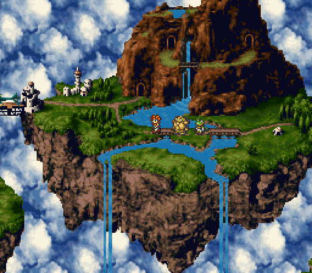
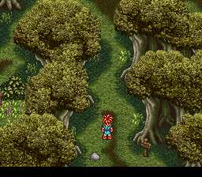
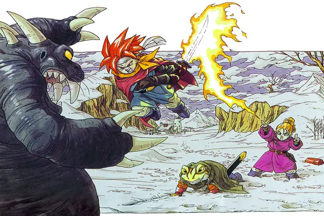
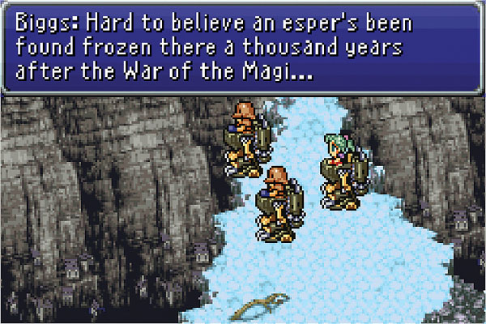
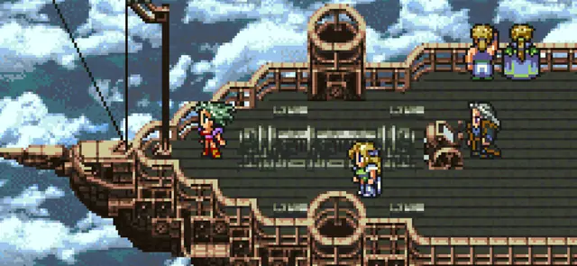
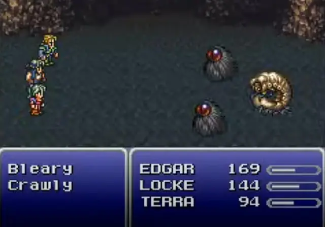
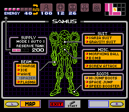
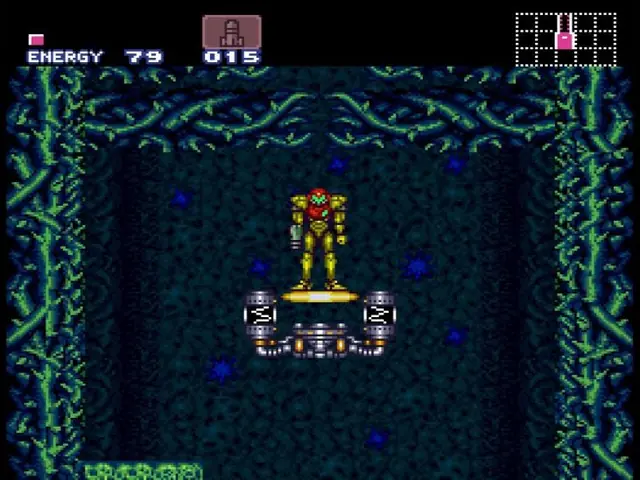
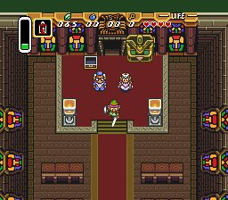
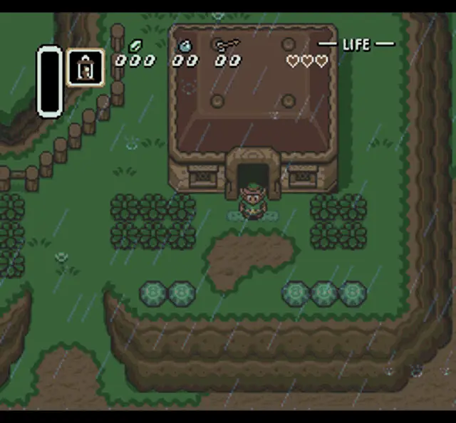
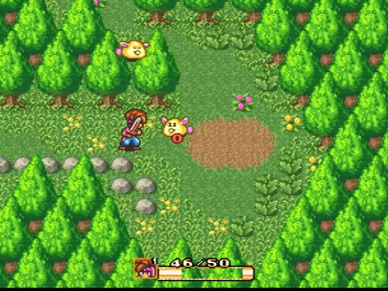
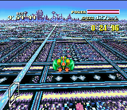
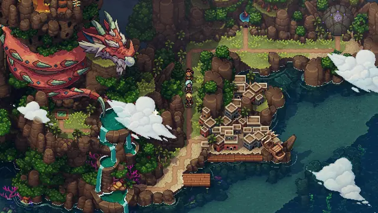
Games
- Chrono Trigger
Study its squashed shapes, drawn to look right once a TV stretched them.3
- Final Fantasy VI
Study the airship flights and the Serpent Trench, which its artist made dark on purpose.7
- Super Metroid
Made to be compared to a film. Study how the opening moves the camera and paces its text.5
- The Legend of Zelda: A Link to the Past
Study how its four-direction sprites handle eight-direction movement.13
- Secret of Mana
Study its soft tile work and pastel colour. Its sprites also face four directions but move in eight.13
- F-Zero
- Super Mario World
Study how tiles, layers and sprites build each frame. Copetti's hardware analysis uses it as the worked example.3
- Chained Echoes
A solo developer's JRPG that aims to capture the classic 16-bit SNES era.17 Compare its battles, always left to right, with Chrono Trigger's.17
- Sea of Stars
Study how it adds modern lighting to SNES-style sprites. Its creative director says Chrono Trigger is why he chose his career.8
Film, art and more
- Super Nintendo Entertainment System
Two graphics chips: one draws tiles and rotates and scales them, the other adds windows, mosaic and fades.3
- Mode 7
One rotating, scaling layer that changed racing games.6
- Akira Toriyama
Chrono Trigger's character designer. Compare his illustrations with the game's sprites.2
- Yoshitaka Amano
Final Fantasy's concept artist. Kazuko Shibuya's sprites start from an illustration like his: she grasps its characteristics, then places pixels one by one.1
- Castle in the Sky
A visual parallel for floating islands and airships.
Sources
- 1Talking FINAL FANTASY pixel remaster with the legendary Kazuko Shibuya
- 2Chrono Trigger: 1995 Developer Interviews
- 3Super Nintendo / Famicom Architecture: A Practical Analysis
- 4Nintendo Classic Mini: SNES developer interview, Volume 2: F-ZERO
- 5Nintendo Classic Mini: SNES developer interview, Volume 3: Super Metroid
- 6Tonc: Mode 7 part 1
- 7Final Fantasy VI: 1994 Developer Interview
- 8Retro role-playing video games are all the rage: here's why
- 9Super Nintendo: Technical Details
- 10Fullsnes: Nocash SNES Hardware Specifications
- 11Nintendo Classic Mini: SNES developer interview, Volume 4: Super Mario Kart
- 12Pixelblog 23: Parallax Scrolling
- 13Pixelblog 22: Top Down Character Sprites
- 14Multiple resolutions
- 152D Pixel Perfect
- 16Pixelblog 1: Color Palettes
- 17Matthias Linda's seven year quest to make retro JRPG Chained Echoes